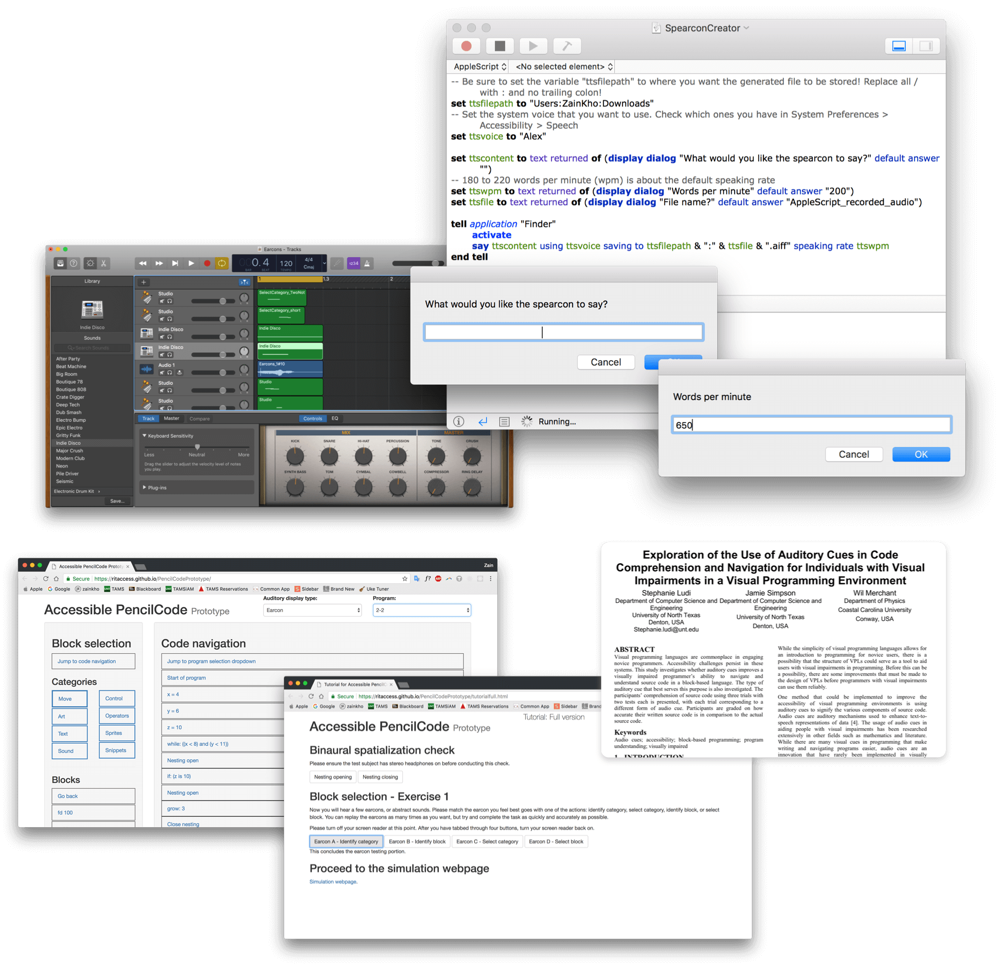
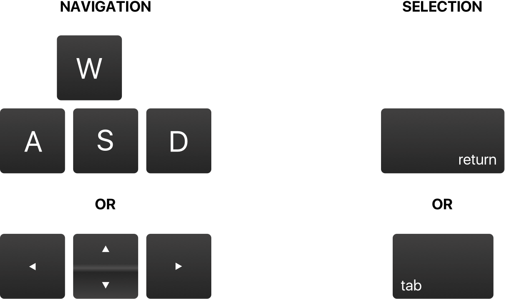
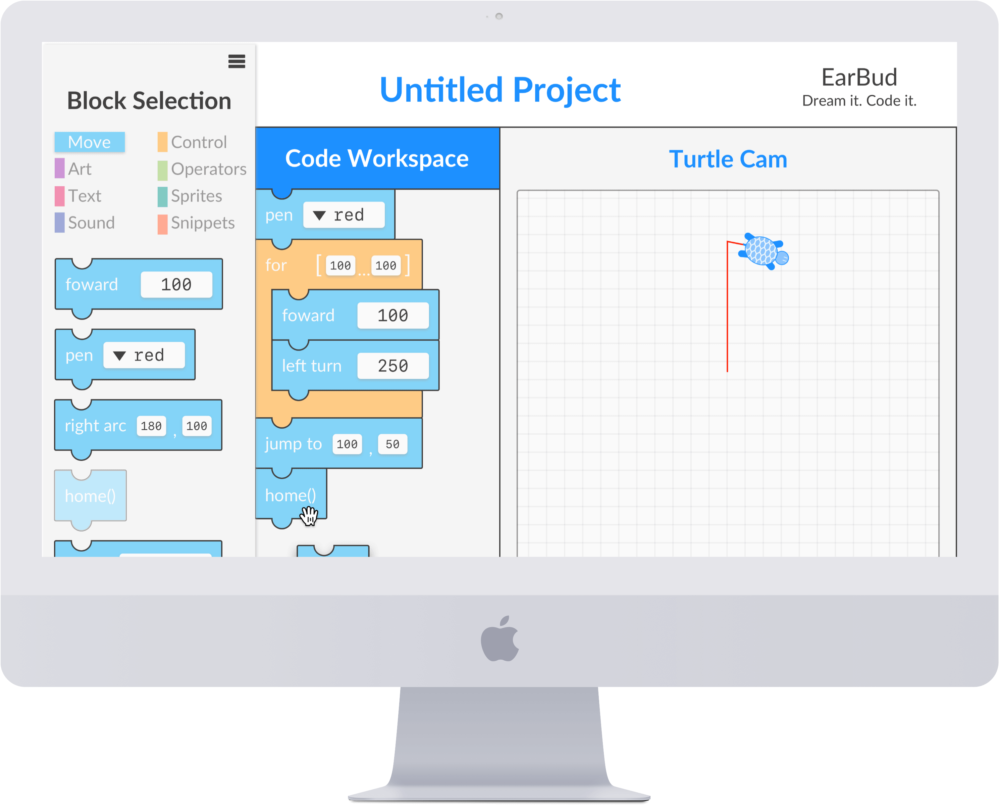

Overview
A website that enables visually impaired users to navigate and comprehend block-based computer programs.
Roles
Research Assistant
Audio Engineer
User Interface Designer
User Experience Designer
Timeline
May 2017 to May 2018
Speech readers are a means to an end for most visually impaired people, but are not necessarily the most productive tools for comprehension and usability. While speech readers have widespread adoptability, the use of symbolic sounds has hardly been explored in accessibility tools.
In order to effectively create a way for visually impaired users to program better, our team had to figure out what was already known. From previous publications, we learned about the differences in the current speech technology and symbolistic sounds. We found out that auditory icons, or sounds that correlate to real world noises, weren’t as effective as earcons, or more abstract sounds. I focused on creating earcons.  Another one of our team members worked on the spearcons, which are basically sped up versions of speech. We created spearcons of various speeds (in words per minute) and implemented those as options as well during the prototyping stage.
After creating sounds, we began to create a testing interface. Deriving controls from video games, we narrowed down our ideas to two distinct interaction systems:  Opting for the more familiar and ergonomic solution, we moved forward using the arrow keys for navigation and tab key for element selection.
Our project was based on the popular, block-based coding website PencilCode.net. Consequently, we wanted to recreate the interface as close as possible to the website since most users would be familiar with the current layout. Keeping in consideration that most of the user base had never seen the website’s visuals, we just wanted to keep things simple and function. 
The EarBud auditory display project allows the user to pick the sounds: choosing from simple speech to earcons (abstract sounds) to spearcons (sped up speech). The auditory display also has special keyboard controls built to emphasize speed and minimize delays in sound comprehension.
We tested not only users' comprehension of the simple programs we created, but also the recognition of earcons mapped to certain actions. Testing showed that earcons, speech, and spearcons were nearly equally effective in that order. Promising comprehension measures point to future coexistence of all three auditory cues in auditory displays.
For one of my college applications, I wanted to see how my current project would look as an advertisement or animation. I created a short, minute-long video in Adobe After Effects to showcase the possiblities that EarBud offers to the word.